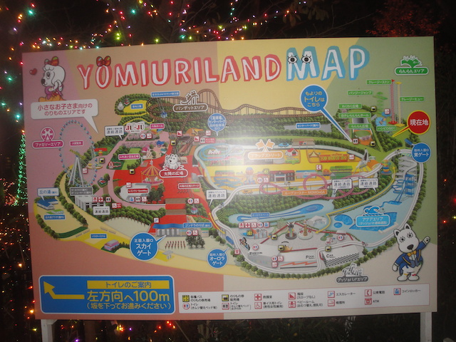
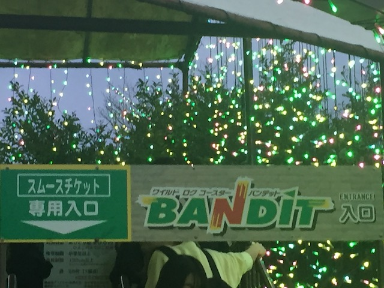
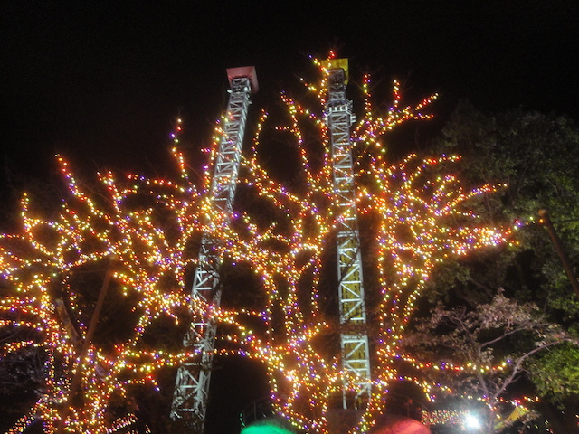
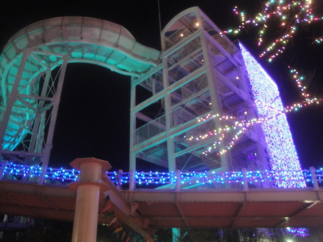

| |
Youmiriland Review

Yomiuriland is an....interesting park. I know the park itself may not seem like anything truly special, but it does have a lot of fun stuff to do. Yomiuriland isn't like most of the parks in America, or even Europe. Japanese Parks tend to have....some quirky qualities to them. But it's just a ton of fun. The coaster selection here is pretty good. Yeah. Bandit is fun and all. It's fast, and has a little bit of airtime, but Spin Runway ia great! Easily one of the better spinning coasters out there with a wacky and....interesting theme. And that's pretty much a common theme for the rest of the park. It has some standard rides, Space Shot, Disk-O, standard stuff like that, and then you've got the interesting and quirky rides. Spin Runway, the Standing and Loop Coaster, that Japanese Shooter Game (which all the locals are rolling their eyes at me, cause I only don't get it since I don't speak Japanese). Sure, it does seem like your standard amusement park. And in a sense, it is. With some quirky rides, sure. But all in all, it seems like a fairly standard amusement park. Nothing too amazing that really stands out and makes you want to hit the park. But it is in Tokyo, so it's incredibly easy to get here. And while none of the rides really stand out, there are a lot of fun ones in an interseting park. So yeah. Definetly check it out if you're in Tokyo.
Rollercoasters
There is a link to a review of all the Rollercoasters at Yomiuriland.
Top Coasters
Bandit Review

Spin Runway Review

Meh Coasters
Momonga Standing and Loop Coaster Review

Kiddy Coasters
Wan Wan Coaster Wandit Review

Flat Rides
Here are all of the flat rides at Yomiuriland. The only flat ride I actually managed to ride at the park is their Disk-O, which was their new attraction when I visited in 2018. Not too much to say about this ride. It's a Disk-O. They're fun, but nothing special. Meh, at least the light package was pretty. However, there are plenty of other flat rides worth noting. They also have a pair of S&S Towers, which...they look fun. Don't think the program would be anything too special. But it does look like a lot of fun, and should provide a great view of Yomiuriland. The other flat rides seem to be standard. A couple interesting Japanese flats, such as the Dragon ride. But aside from that, its chairswings, the evil Inverting Pirate Ship that I hate, a ferris wheel, a carousel entirely composed of Land Dog (OK. That is awesome, since....Land Dog is awesome). But yeah. No real stand out flat ride at Yomiuriland.

Christmas Lights always makes a Space Shot better.
Dark Rides
Now some people would try and argue that Yomiuriland has no dark rides. And...that's essentially true. However, they do have some sort of Walk Through. Now many of you will argue that walk-throughs don't count as dark rides, and....I previously argued that they were. I think at one point, I revoked that argument, and now....I go back and forth between whether they are. But let's count them for now. So they have a Haunted Walkthrough. Two actually. Haunted House, and House of Terror. I didn't do either. Probably because the park was all decked out for Christmas, and doing a horror walkthrough doesn't relly fit the mood. But...if you're a horror fan, there's two for you to check out at Yomiuriland.
Water Rides
I didn't ride any of the water rides at Yomiuriland, and honestly, I kind of regret that. So they have this rapids ride. I don't know too much about it. Apparently it's themed to Cup of Noodles!!? GAH!!! I know I went at night and it was chilly that day! But if I had the rapids ride in mind when I visited, I would've SO stopped and rode, even if I did wind up being cold and wet. I mean....IT'S A CUP OF NOODLES THEMED RAPIDS RIDE!!! That is just.....cool! It probably would've cracked the Top 10 Water Rides List Ugh. Well, I'll just have to make note and ride it when I come back to Yomiuriland. They also have one of those spinning raft rides, but those have dissapointed me time and time again. And that was closed (So to be fair, the Cup of Noodles Rapids Ride was also most likely closed. Especially since I walked right by it repeatedly, and never saw it running).

Bah! Screw the spinning raft ride! Focus on the Cup of Noodles Rapids Ride!
Dining
All right. The food at Yomiuriland is...decent. The food that I wound up getting was a Duner Kebab with beer. Not a really common theme park meal since....it's Turkish Food....in Japan. But hey. I love Doner Kebabs, and of course, you gotta have it with beer. Wish they were more common at more parks. But hey. They're avaliable in Europe and at Yomiuriland as well. But we might as well look at the other food they have if Doner Kebabs aren't your thing. They also have standard American options, like burgers, hot dogs, etc. Standard Japanese options, like Ramen, other Asian Options, such as Chinese Food, and....Poutine!? How the hell do I keep missing Poutine!? Gotta find some Canadian Place in L.A that serves it, or better yet, just go back to Canada LOL. So yeah. They've got a decent collection at Yomiuriland.
 Doner Kebabs and beer is always a good combination.
Doner Kebabs and beer is always a good combination.
Theming and Other Attractions
Here are the reviews of all the other stuff at Yomiuriland. As far as theming goes, there's essentially none. I mean, yeah. There's a little bit on their newer rides. Like on Spin Runway, it has fashion disco theming, and like I mentioned, the rapids ride is themed to Cup of Noodles. But for the most part, there's no theming aside from the few random things. Though let's move on to other stuff since....there's quite a lot of other stuff to do at Yomiuriland. First things first, let's discuss their laser tag. I did it, but....it was hard to follow what was going on. It's primarily in Japanese, and the attendents were reluctant to let me play since....I don't speak Japanese. But I did, and sure enough, I had no idea what was going on, barely scored anything, and wound up making a total ass of myself. I know there are a lot of other things as well. I know they have some sort of animal shows. I don't know too much information about these shows. All I saw was Land Dog feeding a seal, which....the sign was really cute. Also, if you go during the winter like I did, be sure to check out Illuminations, which is their Christmas Lights Festival. And let me tell you. They go ALL IN on this festival. Some of the best Christmas Lights I have ever seen. I know the Illuminations is a thing where all sorts of different places in Tokyo try and outdo each other for Christmas Lights. That is just really freaking awesome! Love that! Even if it was done too early (Early November is NOT Christmas time). Also, I'm not sure if this is only for Illumination, but there also was some sledding that they had. It looked like a lot of fun, but of course, I didn't bother doing it thanks to age differences. Get me here for a private event, and I'd take a spin. But seriously, Yomiuriland's Illumination Festival is awesome!
 Hope you can speak Japanese. >=)
Hope you can speak Japanese. >=)
In Conclusion
Yomiuriland is a really fun amusement park. It's not the biggest park in the world, nor does it have the best rides in the world, but it's still a ton of fun. Bandit and Spin Runway are both very fun roller coasters that may not be anything special, but they are both a ton of fun, especially Spin Runway, which is an underrated spinning coaster! And while its true that there are much bigger (and better) amusement parks in Japan, but Yomiuriland is still a ton of fun. Out of all the parks in Tokyo, Yomiuriland definetly is the biggest one (as long as you're excluding Disney), and with the exception of Thunder Dolphin, has the largest coasters. But even putting that aside, the park has a lot of cool stuff. They have what appears to be one of the quirkiest rapids rides in Tokyo, a lot of cool haunted walk throughs, a quirky laser tag game that's a lot of fun (even if don't understand what's going on), some other standard amusement park rides, such as a Disk=O, S&S Towers, a spinning raft ride, a quirky roller coaster where you can choose whether to stand up or sit down, and a ton more random fun, all wrapped up with a cute custom mascot (Land Dog is awesome). I know Yomiuriland isn't an amazing park by any means, and most of the reason it's highly visited by coaster enthusiasts is because it's right in Tokyo, is incredibly easy to get to, and has a couple large coasters, and is just a lot of fun. If you're staying in Tokyo, I'd definetly recommend stopping by Yomiuriland. It's a really fun amusement park worth a couple hours of your time.
Enthusiast FAQs.
*Are there kiddy coaster restrictions? - Nope. You can ride Wan Wan Coaster Wandit.

Tips
*Be sure to get on Bandit and Spin Runway.
*Spin Runway and the Cup of Noodles Raft Ride are right in a corner at the front of the park. They're easy to miss.
*Check out at least one of the walk throughs or mazes.
*Remember the Cup of Noodles Rapids Ride. Don't forget about it like I did.
*If you go in the winter, be sure to check out Illuminations. Those Christmas Lights are amazing.
*Have Fun!
Theme Park Category:
Small Park
Location
Inagi, Tokyo, Japan
Last Day Visited
November 8, 2018
Video
I unfortunetly did not shoot enough video to make a Yomiuriland video.
Complete Update List
2018
JAPAN 2018!!! =)
Here's a link to the parks website.
Home
|